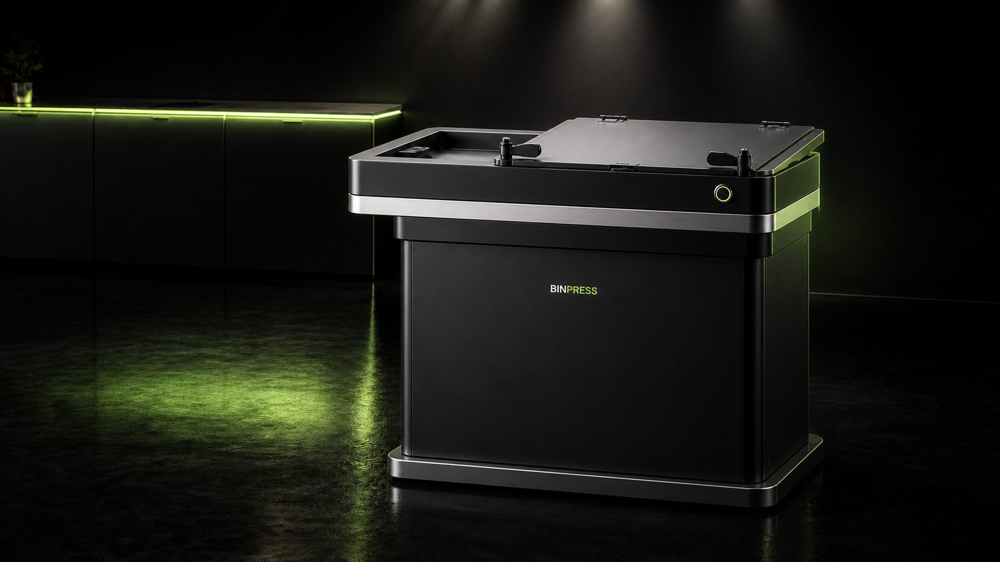
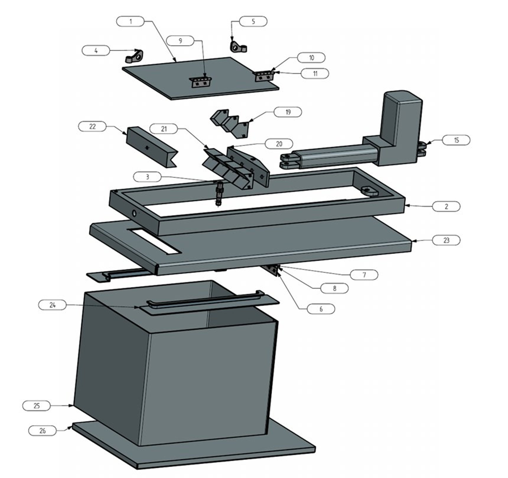
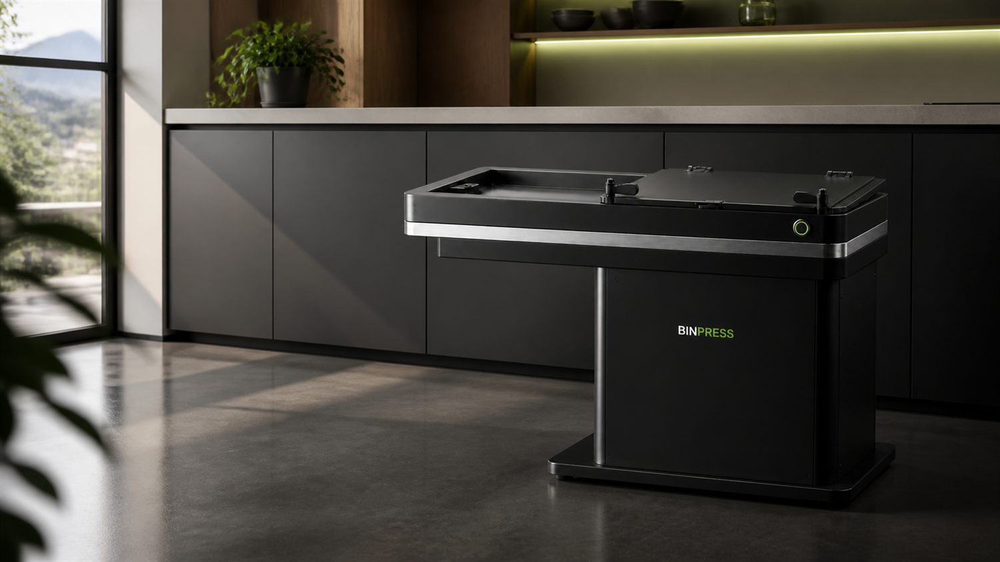
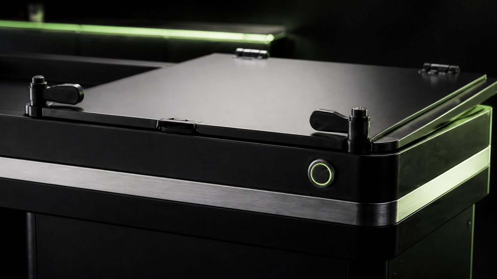
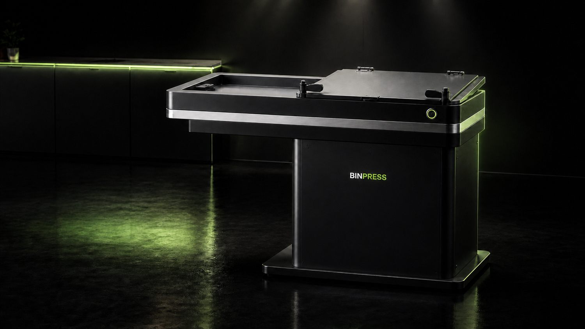

Volumen besser nutzen
Angestrebt werden etwa 40–50 % Volumenreduktion. Der reale Wert wird im standardisierten Prototypentest überprüft.
HAUSHALTS-ABFALLVERDICHTER · HFTM 2026
BinPress verdichtet leichte, trockene Haushaltsabfälle elektrisch direkt im Abfallbehälter — auf Knopfdruck, statt von Hand nachzudrücken.
Ziel 40–50 % Volumenreduktion — Zielwert, im Prototypentest zu bestätigen

KI-VisualisierungA.01 — DAS PROBLEM
Leichte Verpackungen, Folien, Papier und Karton beanspruchen schnell viel Volumen. Häufig wird der Sack gewechselt oder von Hand zusammengedrückt — umständlich und potenziell unhygienisch. BinPress setzt deshalb nicht primär beim Gewicht an, sondern bei der besseren Nutzung des vorhandenen Sackvolumens.
Angestrebt werden etwa 40–50 % Volumenreduktion. Der reale Wert wird im standardisierten Prototypentest überprüft.
Verdichten auf Knopfdruck statt mit der Hand nachzudrücken. Der unmittelbare Nutzen steht vor einer reinen Sparargumentation.
Ein möglichst flexibler Adapter soll die Integration in bestehende, geeignete Haushalts-Abfallbehälter ermöglichen.
A.02 — VORHER / NACHHER
Die Marketingstrategie setzt bewusst auf visuelle Demonstrationen. Diese Animation zeigt den angestrebten Effekt schematisch — noch keinen gemessenen Versuchswert.
A.03 — ZIELGRUPPEN
Im Marketingkonzept stehen drei Haushaltssegmente besonders im Fokus.
Wenig Lust auf unnötige Sackwechsel, hoher Wert auf Komfort und eine saubere Lösung.
Mehrere Personen, wechselnder Abfallmix und ein gemeinsamer Behälter: einfache Bedienung zählt.
Höherer Sackverbrauch macht bessere Platzausnutzung und weniger häufiges Wechseln besonders interessant.
B.01 — ABLAUF
Horizontaler, elektrischer Pressmechanismus — geführt über Gewindespindel und Führungsstreben, mit gekoppeltem Auswurf.
Deckel öffnen, Sack in der vorgesehenen Halterung einsetzen und Gerät wieder schliessen.
Leichten, trockenen Haushaltsabfall einfüllen, Deckel schliessen und mit dem Schieber verriegeln. Ein Sensor prüft die Verriegelung, bevor der Start freigegeben wird.
Die Gewindespindel bewegt die Pressplatte mit rund 3000 N über den 200-mm-Hub; Führungsstreben halten sie stabil. Ein Display zeigt den Zustand laufend an.
Am Ende des Presswegs fällt der verdichtete Abfall durch einen schmalen Schlitz in den Sack. Danach fährt die Pressplatte zurück in die Ausgangsposition.
Position im Bild anklicken oder in der Stückliste wählen — beides hebt dasselbe Teil hervor. 50 Einzelteile in 26 Positionen, Daten aus der Zusammenstellungszeichnung 10013869 (Jean Barraz, 03.07.2026, Massstab 1:5).
Baugruppe wird geladen …
3D-Ansicht in diesem Browser nicht verfügbar. Die Explosionszeichnung zeigt dieselben Positionen.
Ziehen zum Drehen · Scrollen zum Zoomen · Bauteil anklicken

Position wählen, um Teilenummer, Benennung und Menge zu sehen.
Positionen 12–14 und 16–18 (Scharniere, Lager) sind in der Explosionsdarstellung nicht einzeln beziffert und in der CAD-Baugruppe nicht als Volumenkörper enthalten — sie haben deshalb weder Bildmarker noch 3D-Körper. Die übrigen 20 Positionen sind im Modell einzeln anwählbar. Die Zuordnung zu Baugruppen ist eine Lesehilfe für diese Website, keine Angabe aus der Zeichnung. Der Pressvorgang bewegt die Positionen 19, 20 und 21 um den dokumentierten Hub von 200 mm auf die feste Gegenfläche (Position 22) zu. Diese Bewegung ist aus der Lage der Bauteile in der Baugruppe abgeleitet, nicht aus einer dokumentierten Kinematik — die Darstellung läuft im vierfachen Zeitraffer.
B.02 — PROJEKTSTAND
Die Einzelteile sind gefertigt und zum Prototyp zusammengebaut (Stand 09.08.2026). Steuerung, Verkabelung und Inbetriebnahme stehen aus; die praktischen Versuche zu Volumenreduktion, Presskraft, Zykluszeit und Geräuschpegel sind noch nicht gefahren. Die Konstruktion ist im Aufbau-Explorer vollständig dokumentiert — das Making-of zeigt einen echten Ausschnitt aus der CAD-Arbeit am Sackhalter.
MAKING-OF
Das vorhandene Projektvideo zeigt einen echten Ausschnitt aus der CAD-Konstruktion in Siemens NX — als Behind-the-Scenes-Inhalt für Website, Präsentation und Social Media.
Für die spätere Kampagne ist zusätzlich ein kurzes Erklärvideo mit digitalem Zwilling sowie eine reale Vorher-Nachher-Demonstration vorgesehen.
C.01 — AUSBLICK
Die folgenden Darstellungen sind Gestaltungskonzepte für ein mögliches Serienprodukt — kein gebautes Gerät, keine zugesicherte Roadmap. Der aktuelle Projektstand bleibt der Prototyp weiter oben.

KI-Visualisierung
KI-Visualisierung
KI-Visualisierung
APP-KONZEPT
Ein früher UI-Entwurf: eine App, die Füllstand und Verdichtung mehrerer Stationen sichtbar macht. Nicht Teil des aktuellen Marketingkonzepts oder des Prototyps.
Bildhinweis: Die Produktdarstellungen in diesem Abschnitt wurden mit KI-Bildgeneratoren auf Basis des Konstruktionsstands erstellt und sind als Designstudien gekennzeichnet. Sie zeigen kein gefertigtes Gerät.
C.02 — SICHERHEIT
Der aktuelle Sicherheitsansatz sieht mehrere unabhängige Schutzmassnahmen vor. Ihre Funktion muss am fertigen Prototyp geprüft und dokumentiert werden.
Ein Pressvorgang soll nur bei geschlossenem und verriegeltem Zugang möglich sein. Ein Sensor allein gilt nicht als ausreichend.
Die Bewegung muss im Fehlerfall jederzeit gestoppt werden können; ein Neustart darf nicht automatisch erfolgen.
Motorstrom und maximale Fahrzeit sollen Blockaden beziehungsweise zu hohen Widerstand erkennen.
Endschalter und ein zusätzlicher mechanischer Anschlag sollen unzulässige Fahrwege verhindern.
Zeigt den Betriebszustand laufend an — betriebsbereit, Pressvorgang aktiv, Überlast oder Störung.
Der 230-V-Bereich soll vollständig abgedeckt und räumlich vom Pressraum getrennt sein, alle berührbaren Metallteile geerdet. Erdung, Verkabelung und Absicherung sind vor der ersten Inbetriebnahme durch eine fachkundige Person zu prüfen.
STARTBEDINGUNG
Der Pressvorgang startet erst, wenn die Steuerung fünf Bedingungen gleichzeitig prüft:
C.03 — DATENBLATT
Auslegungswerte, Anforderungen und noch offene Versuchsgrössen werden bewusst getrennt dargestellt.
| Kenngrösse | Wert | Status |
|---|---|---|
| Betriebsspannung Antrieb / Steuerung | 24 V DC | Ausgelegt |
| max. Druckkraft Linearantrieb | 3000 N | Ausgelegt |
| Hub | 200 mm | Ausgelegt |
| Vorschubgeschwindigkeit (Auslegungsannahme war 20 mm/s) | 11 mm/s | Antriebsdaten |
| angestrebte Volumenreduktion | 40–50 % | Ziel |
| Zykluszeit — Anforderung Pflichtenheft F1.4 | ≤ 30 s | Anforderung |
| Zykluszeit — Angabe Funktionsprinzip | ca. 30–60 s | Test offen |
| Geräuschpegel | ≤ 80 dB(A) | Anforderung |
| vorgesehene Sack-/Behältergrössen | 35 / 60 / 110 L | Ziel |
Zur Zykluszeit: Aus 200 mm Hub und 11 mm/s Vorschub ergeben sich rechnerisch rund 18 s je Richtung, also etwa 36 s für Vor- und Rückhub. Die Anforderung F1.4 (≤ 30 s) ist mit dem gewählten Antrieb voraussichtlich nicht erreichbar. Der Antrieb wurde bewusst nach Presskraft und Hub ausgewählt — die Machbarkeitsanalyse hält fest, dass eine zuverlässige Verdichtung höher gewichtet wird als eine kurze Zykluszeit. Der tatsächliche Wert wird im Prototypentest gemessen.
D.01 — MARKT & POSITIONIERUNG
Der vorläufige Zielpreis liegt etwa dort, wo heute hochwertige manuelle Lösungen liegen. Gegenüber diesen sollen Antrieb und Bedienkomfort den Unterschied machen, gegenüber fest eingebauten Premium-Kompaktoren die kompakte, nachrüstbare Bauweise und ein Bruchteil des Preises.
Vorläufiger Zielverkaufspreis
CHF 299–399
recherchierter CH-Preis
ca. CHF 341
recherchierter Referenzpreis
ca. USD 2'449
Preisreferenzen: Recherchestand 22.07.2026. Der BinPress-Zielpreis ist keine bestätigte Serienkalkulation und setzt eine deutliche Optimierung von Konstruktion, Montage und Einkauf voraus. Er stammt aus dem Marketingkonzept v0.3 (22.07.2026); das ältere Pflichtenheft v0.2 nennt CHF 500–1000. Die Spanne ist im Projektteam noch abschliessend festzulegen.
NÄCHSTER SCHRITT
Nach Montage und Versuchen soll BinPress mit echten Zielgruppen validiert werden. Geplant sind visuelle Vorher-Nachher-Demos, QR-Codes, kurze Befragungen sowie regionale Testkontakte im Raum Grenchen, Biel und Solothurn.
D.02 — TEAM & PROJEKT
Interdisziplinäres HFTM-Projekt in Grenchen. Die öffentlich eindeutigen Leitungsrollen sind separat ausgewiesen; weitere Fachrollen werden hier bewusst nicht überinterpretiert.
Betreuender Dozent: Marc Beutler